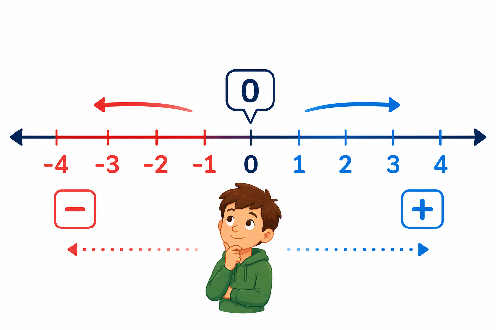

1
oś liczbowa
числова пряма

📘 Co to jest? Що це?
Oś liczbowa to prosta, na której liczby stoją w kolejności — jak linijka w obie strony od zera.
Числова пряма — пряма, на якій числа стоять у порядку — як лінійка в обидва боки від нуля.
⭐ Zapamiętaj Запам'ятай
… −3 −2 −1 0 1 2 3 …
Ліворуч від 0 — від'ємні, праворуч — додатні. Що далі ліворуч — то менше число.
⚠ Nie pomyl Не плутай
- w lewo → mniejszew prawo → większe
- oś liczbowalinia czasu
✅ Przykłady Приклади
- −2, −1, 0, 1, 2
- zaznacz 3 na osi
- −4 lewo od zera
- 5 prawo od zera
- która dalej od 0?